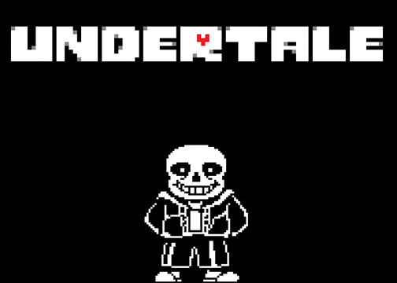
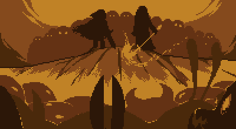
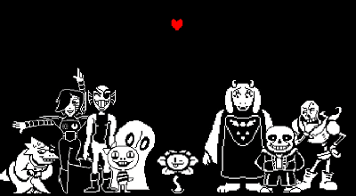

Undertale est un jeu de rôle indé développé par Toby Fox et Temmie Chang. Il est disponible sur PC, Mac, Linux, et la plupart des consoles.
Il est inspiré de nombreux autres titres comme Mother et Touhou, pour ne citer que les plus marquants, mais également de la série britannique Mr Bean, d'où vient l'humour particulière du jeu. Le jeu est officiellement sortie le 15 septembre 2015.
Undertale possède plusieurs mécaniques de gameplay innovantes et uniques mais également une histoire prenante qui cache bien des mystères.
A première vu quand on joue à Undertale, on à l'impression de jouer à un rpg quelconque. La vue de dessus et de coté rappelle beaucoup le gameplay de Mother.
La différence avec un rpg banal apparait lorsque le joueur entre en combat avec un monstre. Le menu est celui d'un rpg mais tous le reste change: le joueur peut choisir différent actions, il peut soit attaquer ou épargner ses adversaires.
Si il choisi d'attaquer il devra faire preuve de précision et de reflex pour pouvoir infliger un maximun de dégât à l'adversaire.
Si il choisi d'épargner son adversaire, il peut devenir ami avec celui ci.
Le plus grand changement vient avec le tour de l'adversaire; le jeu se transforme en Shoot 'Em Up, le joueur
étant représenté à l'écran par un coeur  et doit
éviter les attaques lancées par son adversaire.
et doit
éviter les attaques lancées par son adversaire.
AVANT DE CONTINUER: jouez au jeu vous même!
Undertale est un excellent jeu, et nous préférerions que, si ce n'est pas déjà fait, vous découvriez l'histoire, ainsi que le monde et les personnage qui y sont présents, de vous même!
Toute l'histoire d'Undertale se passe dans un monde souterrain peuplé de monstres et tourne autour d'une mysterieuse guerre entre les HUMAINS et MONSTRES qui se serait déroulée il y a bien longtemps, où les HUMAINS on finit par gagner.
Suite à cette victoire les MONSTRES furent bannis de la Surface de la Terre et sont condamnés à rester enfermé, scellé par les HUMAINS avec l'aide d'une barrière magique, en dessous du Mont Ebott, dans un sous terrain prénommé l'Outremonde.
Tout au long du jeu, vous incarnez un jeune HUMAIN qui, coincé dans ce monde après une chute dans un passage, cherche à rentrer chez lui.
Pour y parvenir vous ferez de nombreuses rencontres hostiles ou amicales, et se sera à vous, joueur, de choisir quelle seront vos réactions, vos choix et vos actions face à de nombreuses situations, toutes plus démentes les unes que les autres.
La particularitée d'Undertale, c'est qu'il n'y a pas qu'une seule façon de le terminer; Undertale cache plusieurs fins, et il va falloir discuter avec les habitants de cet autre monde, explorer les moindres recoins et résoudre des puzzles pour en apprendre plus.
Vous êtes maitre et responsable de toutes vos actions, toutes les décisions prises par le joueur aura un impact sur le monde, présent, futur ou même "passé"...